16‑825 · Learning for 3D Vision · Assignment 1
Cameras, hand-built meshes, point clouds, and implicit surfaces. Every result below is a 360° turntable gif rather than a single still, since a moving view is what actually proves the geometry (and the camera math) is right.
1 · Practicing with Cameras
1.1 · 5 pts, 1.2 · 10 pts
A full turntable of the cow establishes the camera rig reused for every later section: look_at_view_transform(dist, elev, azim) swept over azimuth. The dolly zoom keeps the cow's apparent height constant while the focal length changes, by solving distance = half_height / tan(fov/2) from the mesh's own bounding box each frame, so only the ground plane behind it visibly warps.
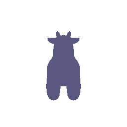
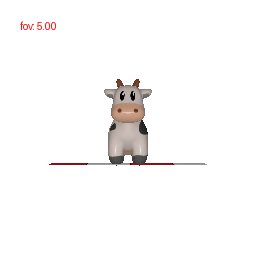
2 · Practicing with Meshes
2.1 · 5 pts, 2.2 · 5 pts
Both shapes are defined purely by hand, using explicit vertex coordinates and triangle index lists, with the winding order of every face checked via the cross-product/right-hand-rule so HardPhongShader lights each one correctly (an inward-pointing normal looks wrong even though the triangle still renders).
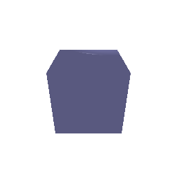
3 · Re-texturing a Mesh
10 pts
Per-vertex color is linearly interpolated along z: alpha = (z − z_min)/(z_max − z_min), blending from color1 at the front (min z) to color2 at the back (max z).
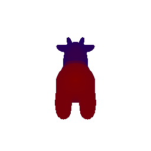
4 · Camera Transformations
10 pts
Starting from the default camera (R₀ = I, T₀ = (0,0,3)), each target view is reproduced by a relative rotation/translation composed as R = R_relative @ R₀, T = R_relative @ T₀ + T_relative. Each one was solved by reasoning about the axis arrows in the target image, then confirmed by rendering and comparing pixel-for-pixel.
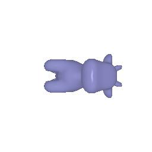
T stays exactly at the default (0,0,3). Only its orientation changes: it rotates 90° about its own line of sight, the axis pointing straight out of the lens toward the cow. That's exactly like tilting a photograph in-plane: nothing about depth or distance changes, so the cow appears to have fallen onto its side even though the camera is looking at the exact same view, just rotated.
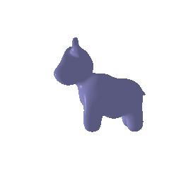
(0,0,3) would have landed, so T_relative has to correct for that redirection on top of specifying the new camera position. That's why its value looks less clean than the other three.
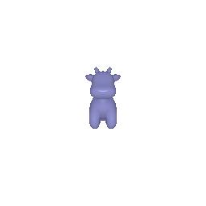
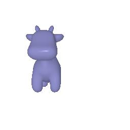
5 · Rendering Generic 3D Representations
5.1 · 10 pts, 5.2 · 10+5 pts, 5.3 · 15+5 pts
Two RGB-D captures of the same plant are unprojected into world space with unproject_depth_image, then rendered alone and as a merged union. The dataset's world coordinates treat −Y as "up" (opposite PyTorch3D's default), so the turntable camera's up vector is flipped to keep the plant right-side up.
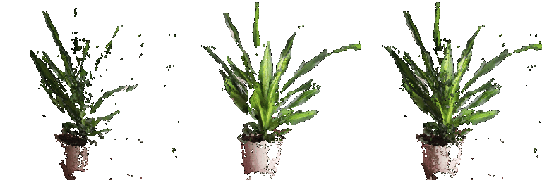
A torus sampled directly from its parametric equation, colored by tube angle so the hole reads clearly at a tilted elevation. The bonus object reuses the same tube cross-section, swept along a helical path instead of closing into a loop.
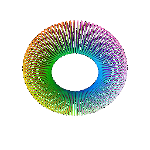
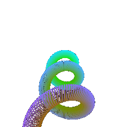
Both are the zero level-set of F(x,y,z), discretized on a voxel grid and meshed with marching cubes. Torus: (√(x²+y²) − R)² + z² − r². The bonus object blends three implicit spheres with an inverse-square falloff ("metaballs") so their surfaces merge smoothly instead of intersecting.
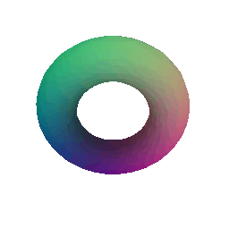
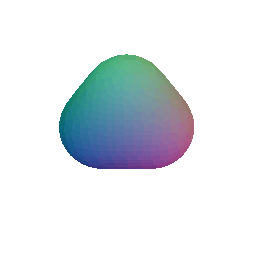
Rendering quality: the mesh is watertight with real surface normals, so it shades smoothly and reads as solid from any distance; the point cloud is only ever a sampled approximation and thins out under zoom or at grazing angles.
Speed & memory: marching cubes pays a fixed voxelization cost up front (64³ samples here) for one fixed mesh; a point cloud's cost scales directly with however many points you draw, cheaper for a quick preview but needing far more points to match the mesh's apparent density.
Ease of use: a point cloud comes straight from sampling F (or a depth camera) with no reconstruction step; a mesh needs connectivity (marching cubes here) and is sensitive to voxel resolution. Too coarse, and thin features like the torus's tube can vanish between samples.
6 · Do Something Fun
extra credit · 10 pts
The same cube mesh from Part 2.2 is recursively instanced: each round keeps the 20 corner-and-edge sub-cubes of a 3×3×3 split and discards the face-center and volume-center cubes, and every surviving sub-cube is merged into one Meshes object.
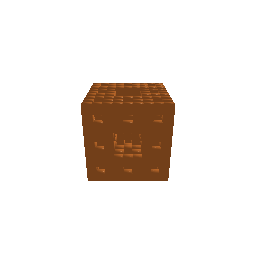
7 · Sampling Points on Meshes
extra credit · 10 pts
Each triangle is picked with probability proportional to its own area, then a point is placed at a uniformly random barycentric coordinate inside it. Sampling vertices directly would instead bias toward wherever the mesh happens to be tessellated finely.
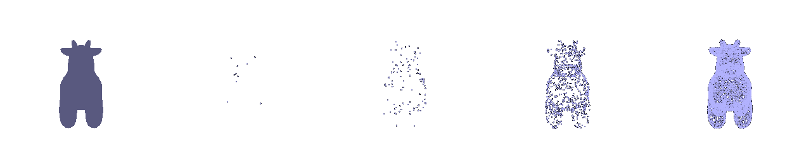